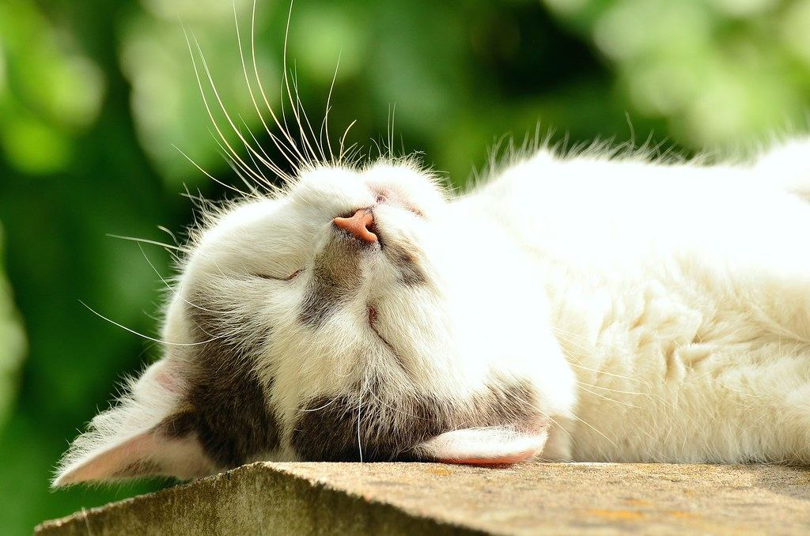

店内では、保護猫たちがゆったりと過ごしています
気分が良いときはお客様のそばに来てくれることもありますが、猫にも気分がありますので、そっと見守っていただけますと幸いです。猫アレルギーのあるお客様は、ご来店前にお電話でお問い合わせください。
名護市の静かな一角に、ひっそりと佇む琉球古民家カフェがあります。地域の保護猫たちと暮らしながら、オーナーが一人で営む小さなお店です。靴を脱いで上がる店内には、丁寧に作られた料理とお菓子、そしてゆったりと過ごす猫たちの姿があります。知る人だけがそっと訪れる、そんな隠れ家の時間を過ごしにいらしてください。
古い琉球家屋の建具や瓦屋根を活かした店内には、テーブル席・床置きのソファ席・カウンター席があり、お一人でも気兼ねなく過ごせます。外には緑に囲まれたテラス席もご用意しています。メニューはカレーライスやカツオと味噌のホットサンドといった食事から、コーヒーゼリーやプリン、ブラウニーなどの手作りデザートまで。ヴィーガン・乳製品フリー・グルテンフリーに対応したスイーツもあり、健康に気を遣う方にもお楽しみいただけます。
靴を脱いで上がる琉球古民家のつくり。テーブル席・床置きソファ席・カウンター席があり、お一人でもゆったりとお過ごしいただけます。
店内では地域の保護猫たちが自由に過ごしています。気分次第で近くに来てくれることもあれば、奥でくつろいでいることもあります。
ヴィーガン・乳製品フリー・グルテンフリーに対応したスイーツをご用意しています。身体にやさしいひと皿を探している方にもおすすめです。

じっくり仕込んだ、ほっと落ち着く味わいの一皿です。
価格はお問い合わせください

カツオの旨みと味噌の甘みが溶け合う、お店の人気メニューです。
価格はお問い合わせください
香り豊かな大人の味わいのデザートです。
価格はお問い合わせください

しっとりとした濃厚な一品に、冷たいバニラアイスを添えて。
価格はお問い合わせください

気分が良いときはお客様のそばに来てくれることもありますが、猫にも気分がありますので、そっと見守っていただけますと幸いです。猫アレルギーのあるお客様は、ご来店前にお電話でお問い合わせください。
※以下はご来店いただいたお客様の声を、投稿者情報を伏せたうえで要約してご紹介しています。
地域の保護猫たちに迎えられながら、靴を脱いで古民家に上がる体験そのものが印象的でした。
スイーツにはヴィーガンや乳製品フリー、グルテンフリーのものもあり、健康に気を遣う方にもおすすめだと感じました。
オーナーが一人で丁寧に作られた料理は、どれも味わい深いものでした。
当店は名護市の静かな場所にございます。ご来店の際は、事前のお電話確認、またはGoogleマップでのご案内をおすすめしています。